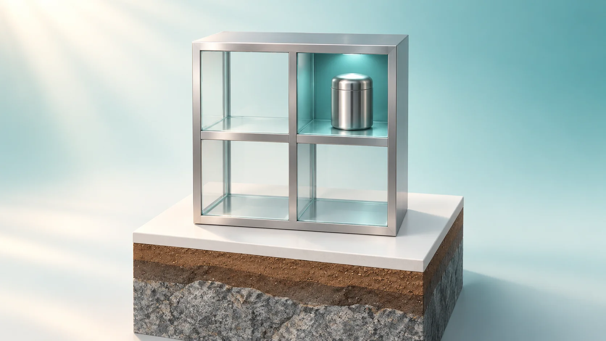
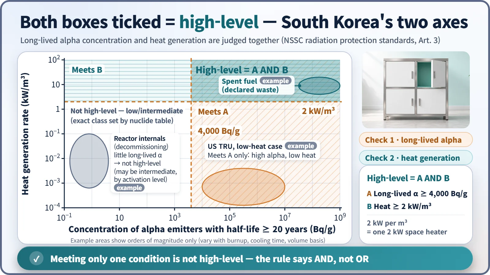
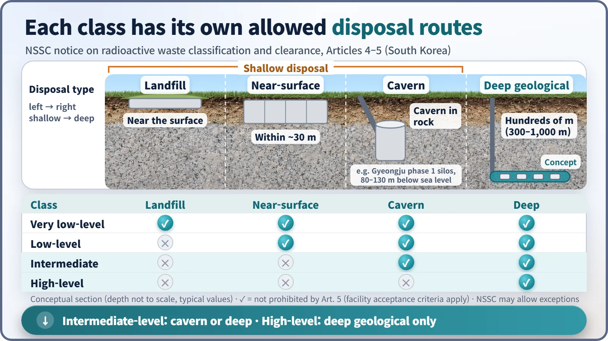

Society, Environment & the Future · 288
Two Questions at the Recycling Bin — How Intermediate- and High-Level Waste Are Told Apart
High-level is not just "very radioactive": it means waste that both lasts for tens of thousands of years and runs hot, and that decides how deep it is buried.

In South Korea, waste is high-level only if it meets two conditions at once: long-lived alpha emitters of at least 4,000 Bq/g and heat generation of at least 2 kW/m³. Meeting just one is not enough. The two checks matter because long-lived alpha sets how long and how far waste must be isolated, while heat sets how a repository must be designed. [1]
Two questions at the recycling bin
Ever stood at the recycling bins with an empty spray can and hesitated? Two questions run through your head at once: what is it made of, and is there still gas inside that could be dangerous? One box for material, one box for hazard. You need both before you know which bin is right.
Radioactive waste from nuclear power plants works in a similar way. Low-level waste, such as used coveralls and gloves, sits at the very low end of both boxes. This article is about what lies above it: the line that separates intermediate-level from high-level waste.
"Strong radioactivity means high-level," right?
South Korea's rules don't cut it with a single line. A Nuclear Safety and Security Commission (NSSC) notice on radiation protection standards (Article 3) asks two questions:
- Box one: Do alpha-emitting nuclides with half-lives of 20 years or more reach 4,000 Bq (becquerels, decays per second) per gram?
- Box two: Does the heat generation rate reach 2 kW per cubic metre?
The connecting word is "and," not "or." Only waste that ticks both boxes is high-level. Waste that crosses just one line stays in the low- and intermediate-level group, and within that group it becomes intermediate-level if its concentration of each nuclide reaches the values in a separate table. [1] [2]

Box one: long-lived alpha is a question of time
Alpha radiation is stopped by a sheet of paper, but once inside the body it is a different story. So the key question is how long, and how far away, it must be kept.
The main alpha emitters with half-lives of 20 years or more are plutonium and americium. Plutonium-239 has a half-life of about 24,000 years, far beyond any span of time people can manage.
How much is 4,000 Bq/g? Assuming plutonium-239 is the only alpha emitter, it works out to about 1.7 mg in 1 kg of waste, far lighter than a single grain of rice, yet enough to cross the line. [3]
Box two: heat is a question of design
Picture a box one metre on each side, giving off heat nonstop like a 2 kW electric space heater. Bury that box deep underground and your first worry is how to keep the surrounding soil and rock from heating up.
High-level waste repositories are designed around this heat. Containers are spaced apart so the clay buffer around them doesn't get too hot, and the waste cools for long enough before disposal. Sweden's disposal concept, for example, keeps the buffer below 100 °C. [4]
This heat comes mainly from fission products such as cesium-137 (half-life 30 years) and strontium-90 (29 years) over tens to hundreds of years, whereas long-lived alpha emitters last tens of thousands of years. Heat is a problem of the first few hundred years; alpha is a problem of the tens of thousands of years after that. That's why the two boxes are checked separately.
Both boxes, or just one
| Example | Long-lived alpha | Heat | Result |
|---|---|---|---|
| Reactor internals (decommissioning) | almost none | can be some | Not high-level; may be intermediate-level depending on activation |
| US transuranic (TRU) waste | above 3,700 Bq/g | low | Not high-level by the two-box test, yet disposed of about 650 m deep |
| Spent fuel declared waste; vitrified reprocessing waste | high | high | High-level |
Reactor internals are steel components that sat close to the core. Years of neutron bombardment create radioactive nuclides such as cobalt-60 in them, so their radioactivity is fairly high, but they contain almost no long-lived alpha emitters. With box one empty they are not high-level, and depending on the concentration of activated nuclides they can be intermediate-level. Some highly concentrated spent ion-exchange resins can also be intermediate-level.
US transuranic waste contains more than 3,700 Bq/g of long-lived alpha emitters yet generates little heat. Even so, it is disposed of in a salt formation about 650 m underground, which shows that long-lived alpha alone is reason enough to bury waste deep. [5]
The classic examples that tick both boxes are spent fuel that has been declared waste and the glass-solidified waste left after reprocessing.
Different bins, different depths
Classification decides where, and how deep, waste is disposed of. South Korea's rules bar intermediate-level waste from near-surface and landfill-type disposal, and bar high-level waste from all shallow disposal.

The phase 1 cavern facility at Gyeongju lies 80–130 m below sea level and accepts waste up to intermediate level. For high-level waste, the internationally recognized approach is deep geological disposal in solid rock hundreds of metres underground. [2]
The IAEA classification (GSG-1) also pairs each class with a disposal method. Intermediate-level waste needs depths of tens to hundreds of metres because of its long-lived nuclides but little or no provision for heat; high-level waste has heat or long-lived nuclides significant enough to shape repository design. The IAEA allows either one to make waste high-level and sets no uniform numerical boundaries, while South Korea requires both 4,000 Bq/g and 2 kW/m³. The same name doesn't always mean the same boundary. [3]
Mixing waste with clean waste to dilute it into a lower class is prohibited, for the same reason you shouldn't throw mixed items into a recycling bin.
In short, two questions
What separates intermediate- from high-level waste is not "how strong is it?" but two questions: how long does it last (long-lived alpha) and how hot is it (heat generation). Only waste that ticks both boxes is high-level, and the answers decide how deep it goes and how it is managed.